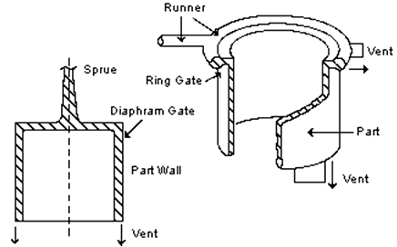
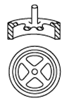
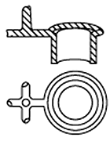
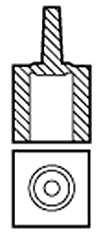
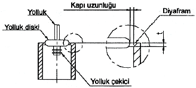
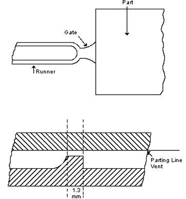
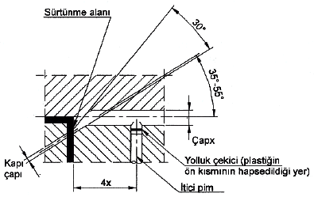
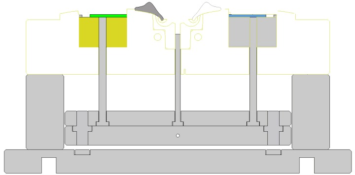

|
3.11.5 Halka (bilezik) giriþ kanallarý
Bu giriþ genellikle silindirik ve iç çapýnýn boyutlarýnýn dýþ çaptan daha önemli olduðu parçalarda kullanýlýr. Yolluk kýsmý ilk önce diþi kalýba açýlýr ve sonra bunun karþýtý erkek kýsma açýlýr ve yolluk giriþ uzunluðu bu yolluktan parçaya doðru açýlýr. Ýki tipi mevcuttur, bunlar; iç halka ve dýþ halkadýr.

Þekil 3.25 Halka tipi giriþ kanalý [3]
a- Ýç Halka:
Bu giriþ, diyafram giriþe benzer ve büyük iç çaplara sahip halka þeklindeki parçalarýn yapýmýnda tek kalýp boþluðu olan kalýplarda kullanýlýr.

Þekil 3.26 Ýç halka tipi [3]
b- Dýþ Halka:
Dýþ halka giriþ diyafram giriþin pratik olmadýðý durumlarda halka þeklindeki parçalarda çok kalýp boþluklu parçalar için kullanýlýr.

Þekil 3.27 Dýþ halka tipi [3]
3.11.6 Diyafram giriþ kanallarý
Diyafram giriþ küçük ya da orta çaplý tek þekilli parçalarýn tek kalýp boþluðuna sahip kalýplarý için kullanýlýr. Ayrýca bu giriþ kullanýmýyla konsantriklik ve kaynak kuvveti de istenilen deðerlerde olur. Balanslý kalýp doldurma için minimum yolluk giriþ uzunluðu (land lenght) 0.5- 1 mm (genel olarak) tavsiye edilir.

Þekil 3.28 Diyafram giriþ [3]
3.11.7 Fan giriþ kanallarý
Bu giriþler kenar giriþ kanallarýnýn þekillendirilmiþ halidir. Ýnce parçalarý doldurmakta kullanýlýr. Plastiðin kapýdan yayýlarak girmesi sonucunda doldurma iþlemi düzgün olur, parçanýn yamulmasý azaltýlýr ve parça istenilen yüzey kalitesinde olur. Büyük yolluk giriþ alanýndan dolayý, yolluðun kesilmesi veya koparýlmasý esnasýnda hafif yolluk giriþ izi problemi yaratabilir.

Þekil 3.29 Fan giriþ kanalý [3]
3.11.8 Tünel giriþ kanallarý
Bu giriþ kanallarý parçanýn basýlmasýndan sonra otomatik olarak enjeksiyon iþlemi sýrasýnda kopar. Bu giriþ kanalý tasarýmýnda kapýnýn gömülü olmasý nedeniyle kalýp içinde gazýn kaçmamasý ve bunun sonucu yanmalar enjeksiyon iþlemi sýrasýnda problemler yaratabilir. Bu nedenle kalýba uygun havalandýrma sistemi yerleþtirilmelidir. Kopma sýrasýnda kopma izinin parça yüzeyinde kalabilme ihtimali de unutulmamalýdýr.

Þekil 3.30 Tünel giriþ kanalý [3]
Günümüzde en çok tercih edilen giriþ kanalý tipidir. Kalýpta iþlenmesi kolay olduðunda dolayý muz yolluk tipinden daha çok tercih edilmektedir.

Þekil 3.31 Muz yolluk kesitli giriþ kanalý [5]
3.12 Yüzey iþlemleri ve yüzey þekilleri
Tasarýmcý, kalýplanacak malzemeye göre kalýba deðiþik yüzey iþlemleri uygulayabilir. Genellikle yüzeyler, plastik malzemenin yapýþmamasý için çok iyi iþlenmiþ ayna kalitesinde olmalýdýr. Ancak polietilen ve polipropilen için yüzeyin pürüzlü olmasý gerekir. Bunun için yüzeyler önce çok iyi iþlenir ve daha sonra kum püskürtme veya kimyasal sývýlarla pürüzlü bir yüzey elde edilir [2]. Paslanmadan korumak için kalýp yüzeyleri sert kromla kaplanabilir.
Parçalarda düzlemsel yüzeylerden çok, geniþ alan kaplayan eðrisel ve küreselleþmiþ yüzeyler kullanýlmalýdýr. Akýþýn ve malzeme daðýlýmýnýn iyileþtirilmesi çarpýlmaya olan eðilimi azaltacaktýr. Sonuç olarak parçanýn görünümü de iyileþecektir.
Maalesef yüzey problemlerinin çözümünde basit kurallar veya formüller yoktur. Her yeni tasarým kendi problemlerini beraberinde getirir. Tasarýmcýlarýn akýlda tutmasý gereken en önemli husus, parçanýn katýlaþtýktan sonra kalýptan kolay çýkarýlabilmesidir.
3.13 Harflerin kalýplanmasý
Çoðu zaman parça üzerinde teknik bilgiler, markalar, kullanma talimatlarý gibi bilgilerin bulunmasý istenir. Harflerin uygulanmasý ise öyle yapýlmalýdýr ki parçanýn kalýptan çýkartýlmasý zorlaþmasýn. Bu, harflerin bölüm yüzeyine dik yerleþtirilmesiyle ve uygun eðim verilmesiyle gerçekleþtirilebilir.
Hem yükseltilmiþ hem de oyulmuþ harfler tasarýmda kullanýlabilir. Önemli olan hangisinin ekonomik olacaðýdýr. Kalýp, iþlenerek yapýlacaksa kalýplanmýþ parça üzerindeki yükseltilmiþ harflerin kullanýlmasý daha ucuz olacaktýr. Parça üzerindeki yükseltilmiþ harf ona karþý gelen boþlukla þekillendirilir. Kalýp yüzeyine harflerin kazýnmasý veya iþlenmesi, harfin çevresindeki metalin kesilip alýnarak kalýptan yükseltilmiþ harf elde etmekten daha ucuzdur [2].
4. Sonuç
Sonuç olarak plastikler; sanayide giderek daha fazla kullanýlmaktadýr. Bu nedenle de plastiklerin tasarýmýnda uyulacak kurallar daha büyük önem kazanmaktadýr. Tasarýmýn ilk aþamalarýnda plastik malzemelerin kimyasal ve fiziksel yapýsý ile ilgili özellikler (amorf yapý, kýsmi kristalin yapý, camsý duruma geçiþ sýcaklýðý, yýpranma sýcaklýðý vb.) iyice düþünülmeli, parçadan istenen fonksiyonlar ve çalýþma ortamýna göre malzeme seçimi yapýlmalýdýr.
Tasarýmý düþünülen mamulün ilk olarak; malzemesinin ve üretim þeklinin belirlenmesi gerekmektedir. Üretilecek mamullerin tasarýmýnda plastik malzemelerin çekme paylarý hesaba katýlmalý, et kalýnlýklarýnda %20 lik bir artýþýn parçada çarpýlmaya, yüzeyde çöküntüye ve birleþme izi gibi hatalarýn ortaya çýkmasýna neden olduðu bilinmelidir. Parçanýn geometrik tasarýmý sýrasýnda gerekli kurallara (çeper kalýnlýðý, yuvarlatmalar, delikler vb.) uyulmalýdýr. Ayrýca plastik üreticilerinin tavsiyeleri de dikkate alýnmalýdýr.
Ürün tasarým aþamasýndayken kalýp tasarým öngörüleri yapýlýp parça tasarýmý son hale getirmeden önce kalýplanabilirliði gözden geçirilmelidir. Aksi halde inanýlmaz kalýp fiyatlarýyla karþýlaþabiliriz.
Keskin köþelerde plastik akýþýnýn engellendiði ve buralarda gerilim yoðunlaþmasýnýn artarak darbeye karþý mukavemetin azaldýðý görülmüþtür. Keskin kenarlý köþeler çelikleri iþlerken de problem yarattýðý gözlemlenmiþtir. Mümkün olduðu kadar keskin kenarlý köþe býrakmamaya özen göstermeliyiz.
Endüstride çok kullanýlan plastik malzemeye metal elemanlarýn geçirilmesi iþleminde, vida ve vidalý mamul üretiminde uyulmasý gereken kurallar ve tavsiyeler örnek þekillerle verilmeye çalýþýlmýþtýr.
Sonuç olarak; bütün bu kurallara uyularak yapýlmýþ tasarým sayesinde parça daha sorunsuz olarak kalýplanacak, kalýplama sonrasýnda meydana gelecek kusurlar (boþluklar, çarpýlma vb.) ortadan kaldýrýlmýþ olacaktýr. Böylece parçanýn ömrü uzatýlýrken; müþteri memnuniyeti de saðlanmýþ olacaktýr.
Kaynaklar
1) Demirer, A. "Enjeksiyon yöntemiyle þekillendirilecek plastik mamüllerin tasarým kurallarý", Sakarya Üniv. T.E.F. Sakarya, 1997
2) Aslan, A "Plastik Ürün Tasarým Ýlkeleri" Ýstanbul Üniv. Fen Bilimleri Enstitüsü 1997
3) Turaçlý H. "Enjeksiyon Kalýplarý Ýmalatý" sayfa 51-63, PAGEV Yayýnlarý
4) Akyüz, Ö "Plastikler ve Plastik Enjeksiyon Teknolojisine Giriþ" sayfa 29-33, PAGEV Yayýnlarý
5) Fardizayn Tasarým Teknopark Tic. Ltd. Þti, 2008
6) GEENTA Kalýp ve Fikstür Makine Ýmalat San. Tic. Ltd. Þti, 2008
7) Plastik enjeksiyon kalýpçýlýðýnda ters açýlar ve maçalar, Yalçýn Çýnar,
www.TurkCADCAM.net/rapor/pek-macalar
|